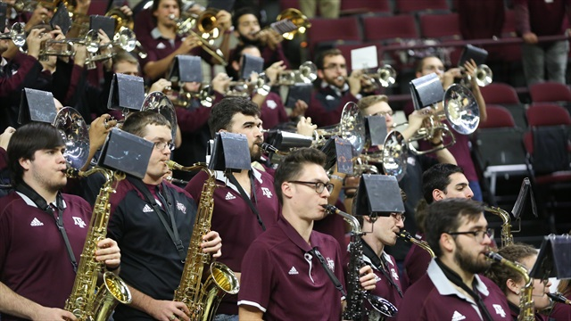

About Me

Howdy! My name is Kyle Owens. I am a student at Texas A&M pursuing a degree in Computer Engineering with a minor in Mathematics. I am expected to graduate Spring of 2023, and am looking to attend grad school to earn my Masters in Computer Science. A few topics I am interested in are computer arcitecture, compilers, programming languages, and software development. I am a flexible and hard-working, engineer, who is looking to gain more real-world experience. Take a look around my webpage, and feel to free to contact me if you have an questions! Thanks and Gig 'em!
Service Activities
Tutoring
For the past 4 year I have been tutoring students in and around my community. I mostly teach high school students and college freshman, and primarily focus on calculus, physics, computer Science, and chemistry as my main tutored subjects. I find it very fun and rewarding to help those around me learn, especially during the past few years with COVID and it being difficult for some kids to get the attention they needed to learn. I have helped many students pass AP tests and improve their overall class grades. Most of my tutoring sessions are set up through zoom calls, which allows me to have a larger outreach and help those who need it year-round.
Hullabaloo Pep Band
I am a pround member of the TAMU Hullabaloo Pep Band. This is a organization which plays at all of the Women's Soccer, Women's Volleyball, Women's Basketball, and Men's Basketball home games at A&M, as well as traveling with the teams for post-season tournaments. The band has the goal of promoting school spirit and to provide support to the A&M Athletics teams. If you ever attend any of home games for the above sports, you will hear to band plyaing as guests are walking in. During the game, the band will play songs for the crowd, perform the school yells, and cheer for our team the whole game though.
Qualifications
I am a rising senion Computer Engieering student at A&M. I have experience using Java, C++, Python, HTML, and CSS. As a Computer Engineering major, I am also required to have a basic understanding electronic compentents. I have taken classes and gained a basic understand of assembly code, basic computer architecture, transistor design, and amplifier design. I am able to utilize my computer science and electrical engineering skills together in order to have an overall understanding about how these fields interact with each other. A few of my notable projects can be seen below. In the future, more projects will be added to this website and to my github page.
Click here to download my resume.
My Projects
Slide Puzzle Solver
I completed the class CSCE 462 Microcomputer Systems at A&M during the spring 2022 semester. In this class, we were tasked with designing and creating a device of our choosing. My team chose to create a device which solves a 15-slide puzzle and presents the solution to the user for them to use to solve the puzzle. To do this we used a rasperry pi running our custom python code, a camera, and an LCD display board. The device first takes a picture of the board in its unsolved state. Then, the image is sent to our image processing software on the raspberry pi, which will identify the edges of the board and crop the image into 16 smaller piece(1 image for each tile). These images are passed through a convolutional neural network, which will identify the number on each tile. Once the numbers are found, we can pass this information on to our puzzle solving algorithm, which uses a variation of the A* search algorithm to determine a quick solution to the puzzle. Finally, the resulting moves are presented to the user on the LCD Display, which they can cycle through to solve the slide puzzle board. More details about the project can be found in our final report and a demonstration of it working can be seen in our video demonstration below(external link here).
Baby Sleep Monitoring
During the summer of 2021 I participated in the SEC Directed Internship put together by Texas A&M. This was a 7-week summer program, where my group was assigned the problem from an outside company to find a way to monitor a baby's breathing while it is sleeping without making contact with the baby. We were tasked with designing our product, researching production, and calculating an estimate for the product's financial gain/loss over time. The overall goal was to present a board consisting of Texas A&M professors, industry members, and company representatives that our product was worth investing in (although there was never ant intent to actually build the product). Our final design was a thin pad that could be placed under the baby's matress that would track the baby's breathing rate using a sensitive motion detector, and alert the parent if the baby every stopped breathing. Our final presentation for this can be viewed here or downloaded here.
Personal Website
This project is the website you are viewing right now. I created my website over a period of two weeks, and the process taught me many value skills. I grasped the basics of HTML, CSS, and Javascript, and how they interact with each other to create a unique product. I learned how to organize a website in HTML, and how to use classes to structure the website to my design. I got experience creating two different CSS styles (which can be toggles by pressing the button in the navigation bar) for my single HTML file. I learned how Javascript can be used to add interactable elements to my website, such as a button or making text change depending on the users action. Much of this knowledge was gained through slef-teaching and trial & error, which is an important skill to have as a software designer. All the files for this website can be found in my github repository. The primary websites that I used to learn were Code Academy for HTML and W3 School for CSS. This website will continue to be updated (after the project has been graded), and will host any future projects that I pursue.